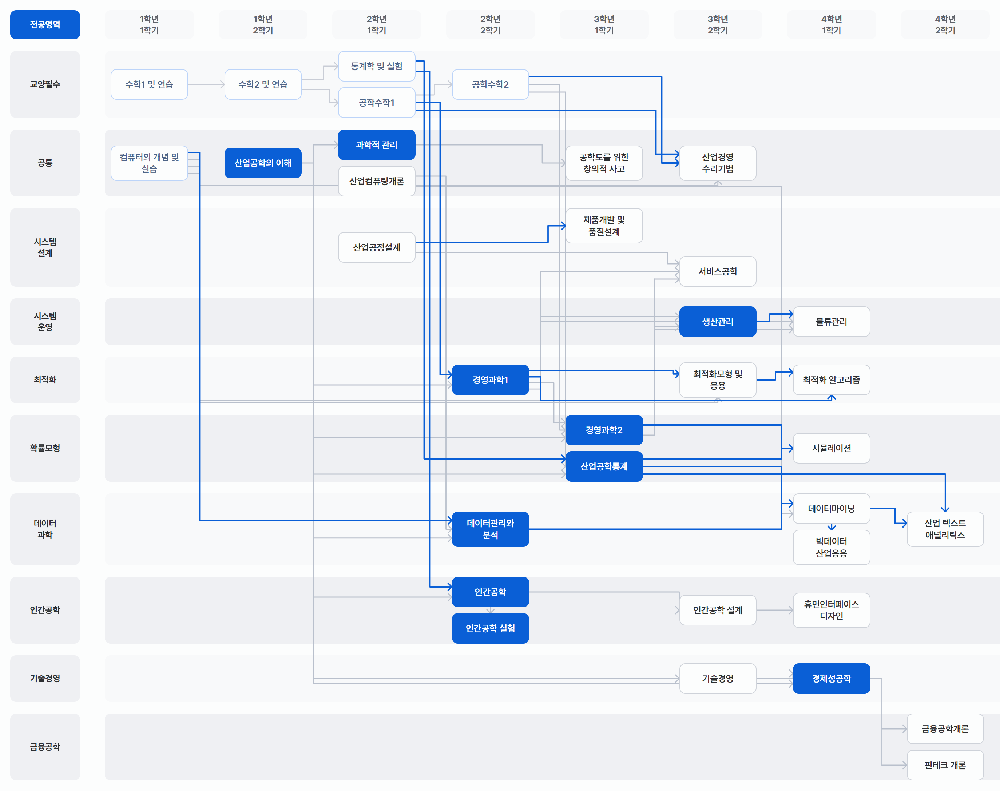

서울대학교 산업공학과 학업 가이드
전공 로드맵부터 이수 규정, 자주 묻는 질문, 개설 과목 정보까지 한곳에 모았습니다. 필요한 정보를 빠르게 찾아 학업 계획을 세워보세요.
학부 전공 과목의 흐름과 대학원 연계 과목을 단계별로 확인합니다.
학부 1~4학년 · 대학원 기초·심화·응용

학번별 이수학점, 전선 인정 과목, 복수전공·부전공·자유전공 기준을 정리했습니다.
20~26학번 · 졸업 130학점
개설 과목을 검색하고 필수 과목, 데이터 관련 과목 등을 쉽게 찾아봅니다.
64개 과목 · 2028-1학기까지
수강신청, 이수규정 등 학생들이 자주 찾는 질문을 모았습니다.
질문 16개
학문의 토대·지성의 열쇠·베리타스 52학점 구성과 영역별 이수 규칙을 정리했습니다.
교양 52학점 · 25학번 이후